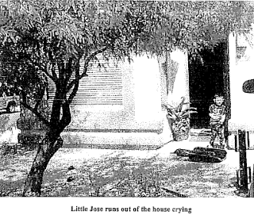
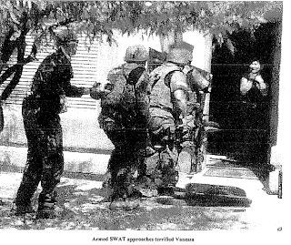
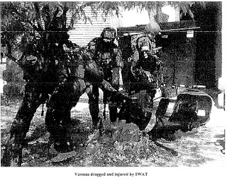

 |
| Victim of state-inflicted gun violence: Jose Guerena, Jr. after seeing the dead body of his father. |

Gabrielle Giffords, the “surprise witness” at the January 30 Senate hearing on gun violence, was among thirteen people attacked by a deranged gunman in the parking lot of a Safeway in Tucson two years ago. Vanessa Guerena, another Tucson resident whose husband was murdered in an act of gun-related criminal violence in their living room about four months later, was not given an opportunity to address the Senate panel. That’s because her husband’s killers – who remain at large – committed that crime under the color of state “authority.”
Guerena, a former Marine and Iraq combat veteran, was gunned down by a Pima County SWAT team who committed an illegal home invasion on the basis of a spurious search warrant. When the invaders arrived, Jose was asleep after finishing a graveyard shift at a local copper mine. It’s difficult to believe that the 26-year-old father of two would be working the graveyard shift if he had been at the center of a large marijuana smuggling operation, as the Pima County Sheriff’s Office later claimed on the basis of unalloyed speculation.
The Sheriff’s Office was aware of Jose’s work schedule, because they had kept his home under surveillance for several weeks before the raid. If an arrest had been justified, it could have been carried out, using conventional means, at practically any time. In fact, the Sheriff’s Office conducted a conventional, low-profile arrest of three of his relatives. The suspects – two small women and a man well into middle age – were taken into custody by plainclothes detectives without a SWAT team laying siege to their homes. But this occurred nearly a year after the fatal SWAT assault on Guerena’s home.
The Sheriff’s Office never explained why a SWAT raid was supposedly necessary in order to carry out searches that didn’t result in arrests until nearly a year later. The unspoken but obvious answer was that the raid wasn’t necessary – but it seemed like a fun and relatively low-risk outing for the armored adolescents that compose the local SWAT team. Their attitude as they approached the Guerena home doesn’t suggest that they were genuinely concerned about the possibility of danger. The officers were cheerful and light-hearted as they were decanted from their armored vehicle to inflict terror on an innocent family.
After being shaken awake by his terrified wife, Jose grabbed a legally acquired AR-15 rifle and told his wife and their four-year-old son, Jose, Jr., to hide in a closet while he confronted the unidentified intruders.
Within seconds of forcing their way into the home, the raiders -- who were armed with high-capacity “assault weapons” of the kind that would be banned for civilian use if Obama, Biden, Feinstein and their ilk prevail – had flung 71 rounds at Guerena. In keeping with established custom, the uniformed murderers lied by claiming that their victim had fired the first shot after growling a cinematic imprecation at the SWAT team. It was later established that Jose didn’t even disengage the safety on his rifle. He was hit with twenty-two rounds.
During the assault, Vanessa called 911. Paramedics arrived on the scene in minutes. The SWAT team turned them away. According to the coroner’s report, the injuries Jose sustained were not fatal – if he had received immediate medical attention. There was at least one combat medic in the SWAT team that attacked the Guerena home. He was morally and legally required to provide aid. Doing so, however, might have posed an immeasurably small risk to that most precious of things, “officer safety” – so the team simply waited for Jose to die.
One of the raiders expressed dissatisfaction with that decision -- but because he wanted to “finish” what they had started by cleanly killing off their victim, rather than doing whatever was necessary to save his life.
 |
| Vanessa pleads for someone to help her husband. |

When a tearful and horrified Vanessa emerged from the home to plead for someone to help her husband, she was assaulted and dragged away to be interrogated without the benefit of legal counsel. Her abductors maintained the pretense that her husband was alive and getting medical assistance. After a lengthy interval, four-year-old Joel wandered out of the house. He most likely has vivid memories of seeing his father’s bloody and lifeless body on their living room floor.
Jose was a peripheral figure in the narcotics investigation. The marauders who attacked the Guerena family’s home did not know what they were looking for, and found no evidence that Jose was involved in criminal activity. They most likely wanted to blackmail him into becoming an undercover asset.
"Mom, was my dad a bad guy?" six-year-old Joel tearfully asked his newly widowed mother after the child -- who was at school during the shooting -- had absorbed the full horror of what had happened. "They killed my dad! Police killed my dad! Why? What did my dad do?"
 |
| Vanessa assaulted by Pima County SWAT Team. |

Vanessa should have been offered the opportunity to tell that story before the Senate panel – and in front of the national audience commanded by the January 30 hearing. Jose, Jr., who is now six years old, might also have been able to testify. But this wouldn’t have been compatible with the purpose of the event, which was to advance a “conversation” intended to promote the disarmament of the public, with the ultimate objective of creating a government monopoly on the use of force. That disarmament program would be carried out by, among others, the state-licensed assassins who murdered Jose Guerena.
Among those who were invited to testify before the Senate
panel was Baltimore County Police Chief James Johnson, who insisted that “we
are long overdue” in enacting federal measures intended to prevent citizens
from owning what he described as “firepower originally designed for combat.”
| For us, but not for you: Chief Johnson with ammo magazines. |

“Like assault weapons, high-capacity magazines are not used
for hunting, and they do not belong in our homes,” proclaimed Chief Johnson. He
urged the Senate to “stand with law enforcement on these common-sense public
safety measures” – by which he means not a “ban” on those weapons
and high-capacity magazines, but rather policies that would deny the public
legal parity of weaponry with state-licensed home invaders like those who
murdered Jose Guerena.
According Johnson’s biography, he began his law enforcement
career “as a police cadet at the age of 18” and has been employed with the Baltimore
County Police Department for more than 30 years. In addition to documenting
that Johnson has never held an honest job in the productive sector, that bio
implicates the Chief in the
January 2005 murder of 51-year-old Cheryl Lynn Noel.
During a traffic stop the previous October, Mrs. Noel’s
18-year-old son Matthew was found in possession of a plastic bag containing an
unidentified “white dust.” A warrantless search of the trash outside the Noel
family’s home yielded what the police described as “trace amounts” of drugs –
that is, marijuana seeds -- and drug “paraphernalia.” It was at that point the
police applied for a “no-knock” search warrant of the family’s home.
Although her husband had a thirty-year-old conviction for
second-degree murder, Cheryl Lynn – who held Bible studies in the home -- had
no criminal record. However, both she and her son Jacob owned legally
registered firearms. That fact was listed among the details cited to justify a “no-knock”
SWAT raid to arrest her younger son Matthew on a narcotics charge. Of course,
the police didn’t explain why it was “necessary” to stage a pre-dawn home
invasion, as opposed to conducting a conventional arrest.
| What Cheryl Lynn saw: Baltimore County SWAT operators. |

At 4:30 a.m. on the morning of January 21, Cheryl Lynn and
her husband were startled awake by the concussion of a flash-bang grenade and the
sound of a battering ram being used to force open the front door.
Mrs. Noel
reached for her handgun and pointed it at the bedroom door, which was forced
open by a figure in battle fatigues, whose face was covered with the visor of a
black ballistic helmet, and who carried a large ballistic shield.
Before Cheryl Lynn could fire a shot in her own defense, the
intruder – Officer Carlos Artson – fired two shots into her upper torso. Cheryl's
grasp on her handgun slackened – not surprisingly, since she most likely was
already dead. Artson continued his approach, yelling at Cheryl to move further
away from the gun. When the victim couldn’t comply, Artson shot her a third
time, administering the coup de grace from point-blank range.
It’s important to point out that Matthew, who was the
subject of the raid, was sleeping downstairs at the time. Even if the raid was
justified – which, of course, it wasn’t – there was no need for the officers to
barge into the upstairs master bedroom in order to carry out an arrest.

Charles Noel filed a lawsuit against the Baltimore County
Police Department. Acting out of tribal reflex, then-Chief Terrence Sheridan responded
by awarding Cheryl Lynn’s murderer the Silver Star, the department’s
second-highest award for valor. The citation claims that Artson “saved
himself and his fellow officers from being shot” after being “confronted by a
woman pointing a loaded handgun at him, during the service of a high risk, `no
knock' search warrant for an ongoing narcotics investigation.”
Artson was “confronted” by Mrs. Noel in exactly the same sense that any armed robber could make that claim. Of course that comparison is unfair: Armed robbers don't give each other puerile little baubles to celebrate their “valor.”
At the time of the fatal home invasion that resulted in the murder of Cheryl Lynn Noel, then-Colonel Johnson supervised the department’s tactical unit. This means that he had “command responsibility” for the SWAT team’s actions. In June 2007, Johnson was chosen to replace Sheridan as Police Chief when the latter was appointed head of the Maryland State Police. I’m cynical enough to believe that Johnson’s promotion, like the “valor” award presented to Artson, was intended – at least in part – as a defiant gesture of contempt toward those who had condemned the murder of Mrs. Noel.
Artson was “confronted” by Mrs. Noel in exactly the same sense that any armed robber could make that claim. Of course that comparison is unfair: Armed robbers don't give each other puerile little baubles to celebrate their “valor.”
At the time of the fatal home invasion that resulted in the murder of Cheryl Lynn Noel, then-Colonel Johnson supervised the department’s tactical unit. This means that he had “command responsibility” for the SWAT team’s actions. In June 2007, Johnson was chosen to replace Sheridan as Police Chief when the latter was appointed head of the Maryland State Police. I’m cynical enough to believe that Johnson’s promotion, like the “valor” award presented to Artson, was intended – at least in part – as a defiant gesture of contempt toward those who had condemned the murder of Mrs. Noel.
The Noel family lost their case, and Artson remains at
large. Last July, in a incident that was eerily similar to the murder of Cheryl
Lynn Noel, Artson
murdered Ronald Cox in the course of a paramilitary raid to arrest suspects in
an attempted murder case. Like Mrs. Noel, Mr. Cox, the owner of the home
invaded by the police, was not a criminal suspect. Like Mrs. Noel, he was armed
when he encountered the police in his upstairs bedroom. However, he didn’t have
a gun; he had what was described as a “large sword.” The police report complained
that Cox had “damaged” Artson’s ballistic shield.
Apparently, summary execution
is appropriate punishment for Mundanes who impudently disfigure government
property in that fashion.

(Note: This version was edited slightly edited by removing a reference to Guerea's legally acquired rifle being "properly registered.")
Once again, thank you for your continued support to help keep Pro Libertate on-line. We honestly couldn't make it without your help. God bless!
Dum spiro, pugno!